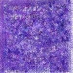

コンチE/u>
A1 おおもうけバカボン
A2 踊れバンバン
コンチE/u>
A3 私�EみまちめE��
B1 あ�E素晴らしぁE�EをもぁE��度
コンチE/u>
B2 バカボンのススメ
B3 中央線ヤクザブルース
コンチE/u>
|
空手バカボン教�Eすすめ 伊集院アケチEbr>
若老E��の間に悪が�EびこってぁE��す。本来、美しぁE��春時代をオーカすべぁE 彼らが珍妙なエレキギターの音色に酔いしれ、「オー、モーレチE��」などと叫びながら、E モンキーダンスと称したコシ振り踊りにあけくれてぁE��す、Ebr> 若老E��、二度ともどらぬ青雲の日、E��無駁E��するのはよくありません。いめE��E ぁE��なぁE�Eです！踊りをやめなさい�E�エレキギターを捨てなさい�E�そしてつぎ�EぁE だらけのラチE��ズボンを脱ぎすて、ロンドンブ�EチE��燁E��す�Eです！Ebr> なにも恐れることはありません。あなたたちには、バカボン様がつぁE��ぁE��下さめE のだから.... 昭和三十九年十二月十�E日 雪の降る夜記す |